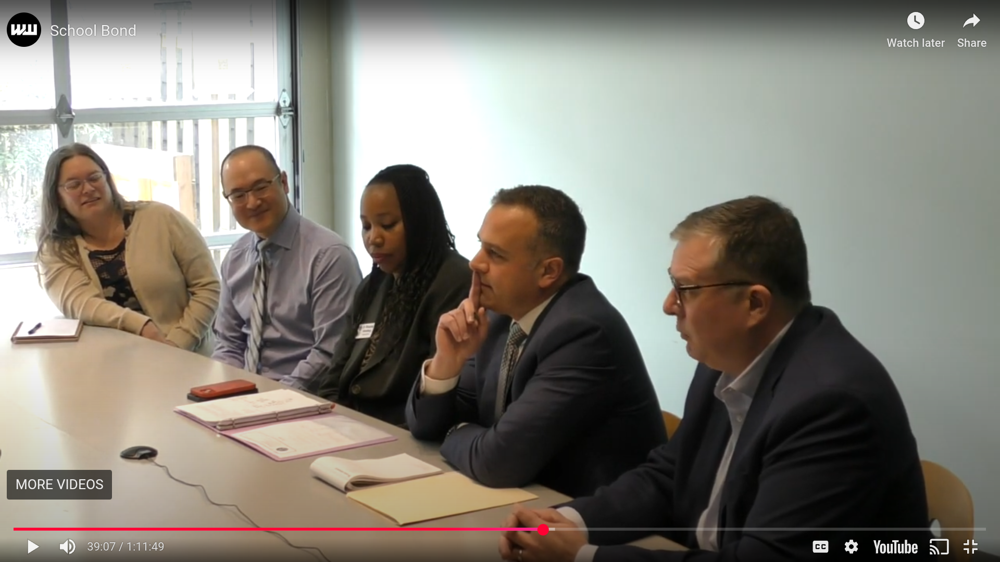

Vandalizing Multnomah County's Voters' Pamphlet
Portland Public Schools put forward a bond renewal, Measure 26-259, to modernize the remaining high schools (Cleveland, Ida B. Wells), follow-through on the 2020 bond to modernize Jefferson High School, and address a long-standing maintenance backlog of elementary and middle schools, including seismic upgrades.
In the Voters' Pamphlet, immediately after the superintendent's formal summary of the measure, readers find an argument "in favor" (p.81) that urges to "vote YES on this bond because nothing says 'It's for the children' quite like bankrupting taxpayers to build half-empty schools!"
(The "half-empty schools" is referencing local media coverage that cites Portland State University's forecast predicts enrollment will decline through the 2032 school year, but the news articles omit that the narrative of the report then says "before beginning a recovery" with the projection showing net positive enrollment by '39. Notably, that is as many years out as PPS has been engaged in modernization.)
Because Oregon has been voting by mail since the '90s, readers will have experience approaching the pamphlet arguments with some skepticism. This particular argument, "furnished by Eric Fruits," is more than falsely labeled opposition, however.
Mr. Fruits is outspoken in his opposition to the measure, and has been organizing opposition to the current series of PPS bonds since they were first proposed in 2011. This context is important to the argument in which he says that the measure will "give PPS a blank check!" and have "no accountability." Meaning he is:
- Familiar with the pamphlet and would know that it's first come, first print, with arguments in favor appearing before opposition.
- Aware that the bond has an active, independent Bond Accountability Committee.
- Aware that the school board separately commissions Bond Audit Reports.
Information in the pamphlet is published as-is. Like Wikipedia. And if it were Wikipedia, the information would categorize as vandalism. Eric Fruits is vandalizing the county's Voters' Pamphlet in order to prominently catch reader attention in an act of deliberate disinformation.
That's the overarching concern: the voters' pamphlet is at times the only reliable source of sufficient information and it has been vandalized.
UPDATE, Mon May 19, 2025: County election officials replied clarifying that the Oregon statute ORS 251.415 (to review whether an argument is listing correctly as in favor or opposition) only applies to state measures.
This incident is a case study for information security of election materials: if the arguments list first come first serve regardless of position, then there would be no issue. But since the in-favor arguments print first, the process is subject to abuse.